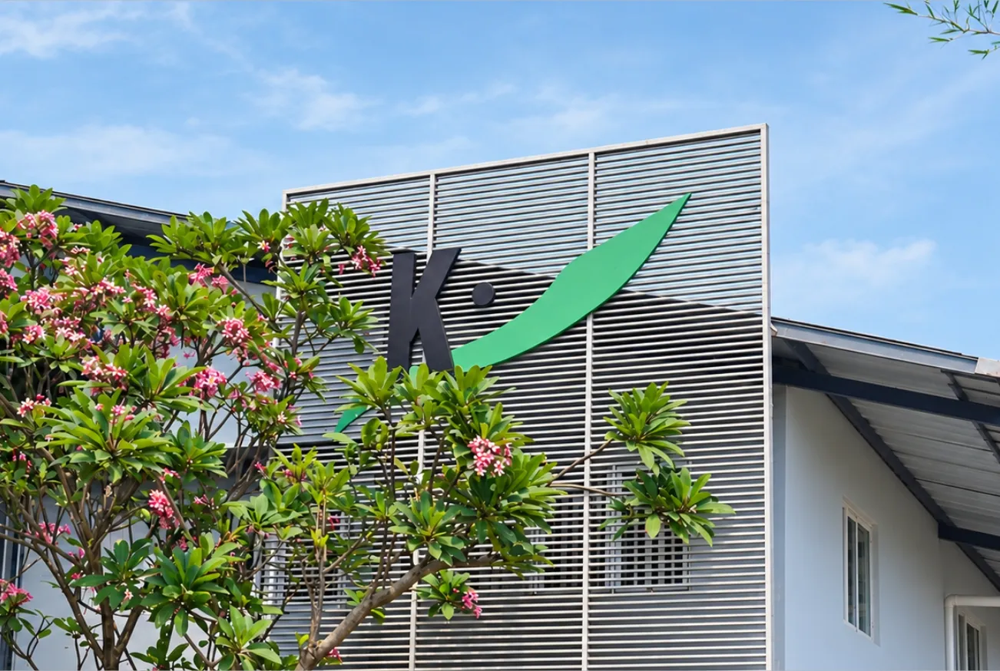

Mengenal Kusuma Kencana Mulya dan Perjalanan Textile Printing di Pekalongan
Kain yang kita temui sehari-hari memiliki cerita panjang sebelum akhirnya menjadi sebuah produk. Di balik motif, warna, dan karakter kain, terdapat proses produksi yang membutuhkan pengalaman, ketelitian, serta konsistensi.
PT Kusuma Kencana Mulya (KKM) merupakan perusahaan tekstil yang berfokus pada produksi batik printing dan telah berkembang di Pekalongan selama puluhan tahun. Berawal dari usaha produksi kain batik printing, KKM terus berkembang dari produksi motif batik tradisional hingga berbagai motif tekstil dan batik modern.
Berawal dari Batik Printing
Pekalongan dikenal sebagai salah satu daerah yang memiliki sejarah panjang dalam industri batik. Dari lingkungan inilah perjalanan KKM berkembang.
Seiring waktu, kebutuhan terhadap kain bermotif juga semakin beragam. Tidak hanya untuk batik, tetapi juga untuk berbagai kebutuhan fashion dan produk tekstil lainnya.
Perkembangan tersebut mendorong KKM untuk terus mengembangkan kemampuan produksi, teknologi, serta sumber daya manusia agar dapat memenuhi kebutuhan tekstil yang semakin beragam.
Proses yang Menjadi Bagian dari Kualitas
Menghasilkan kain bukan hanya tentang mencetak sebuah motif pada permukaan bahan.
Sebelum menjadi kain siap digunakan, terdapat berbagai tahapan yang perlu diperhatikan. Mulai dari pemilihan material, pengembangan desain, penyesuaian warna, proses printing, hingga pemeriksaan kualitas.
Setiap tahapan memiliki perannya masing-masing dalam menentukan hasil akhir kain.
Karena itu, pengalaman dalam produksi menjadi bagian penting untuk menjaga konsistensi proses dan kualitas produk.
Terus Berkembang Bersama Industri Tekstil
KKM terus mengembangkan teknologi manufaktur dan kemampuan produksinya. Fasilitas produksi didukung oleh mesin dan teknologi dari Asia dan Eropa, serta sumber daya manusia yang terlibat langsung dalam proses produksi.
Bagi KKM, perkembangan industri tekstil bukan hanya tentang mengikuti perubahan teknologi. Lebih dari itu, perkembangan juga berarti terus melakukan perbaikan, memahami kebutuhan pelanggan, dan menjaga kualitas pada setiap proses.
Dari Pekalongan, perjalanan tersebut terus berlanjut.
Karena di balik setiap kain, selalu ada proses, pengalaman, dan orang-orang yang membuatnya menjadi sebuah karya.